Book
Born from a meandering walk through the Cranbrook campus. In collaboration with Logan Acton and Jing Ouyang.
White sketchbook, assorted found images, pen and ink written rememberings and misrememberings of conversation snippets.
8.5" x 11" x 0.38"
 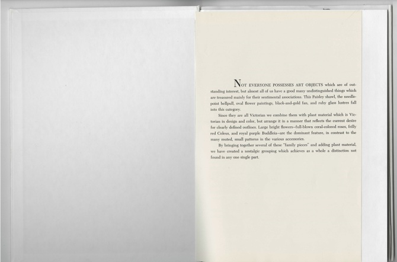
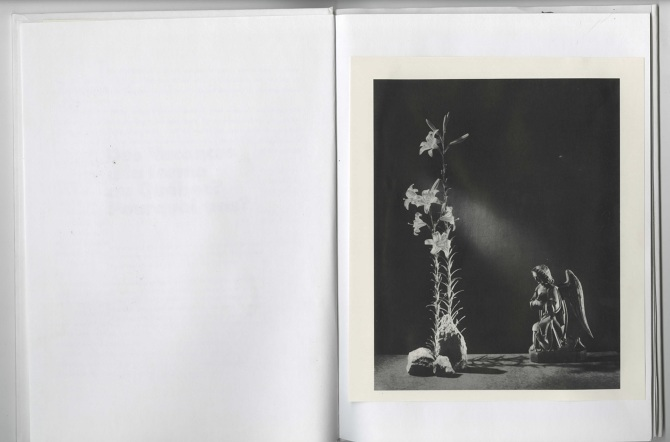
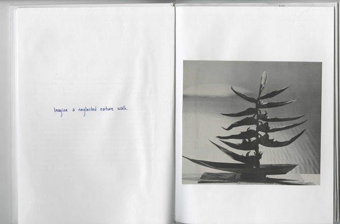
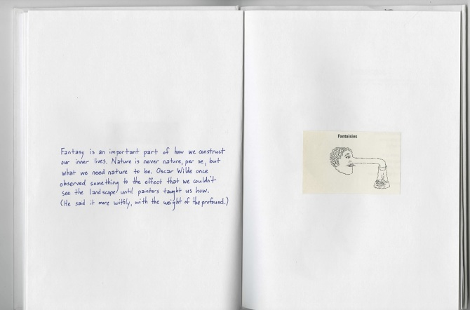
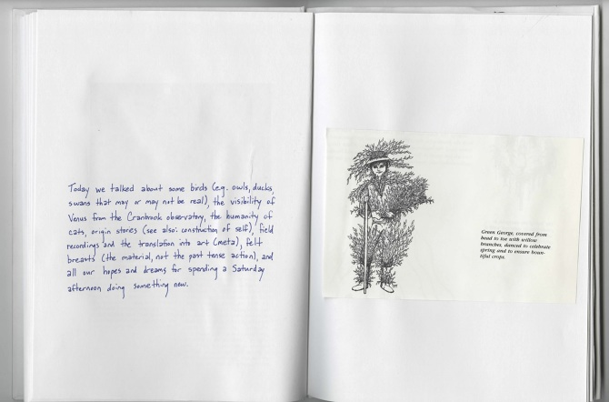
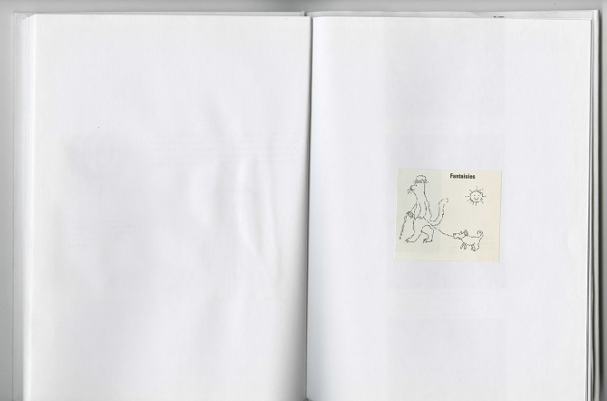
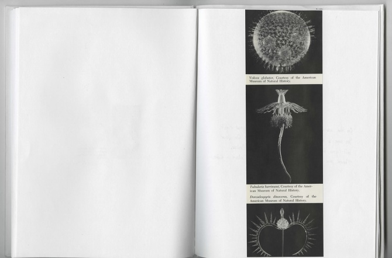
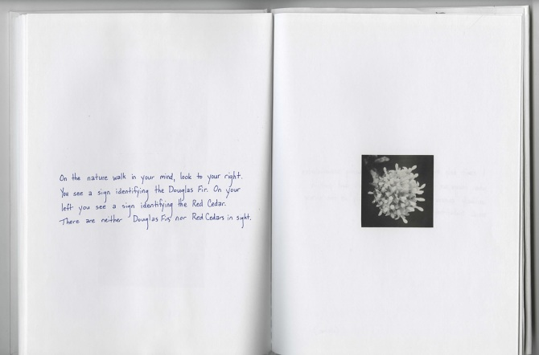
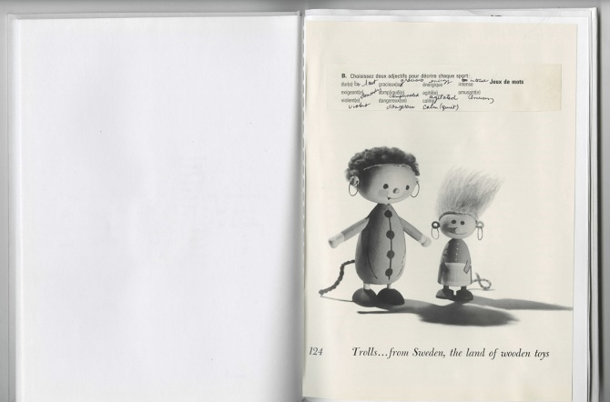
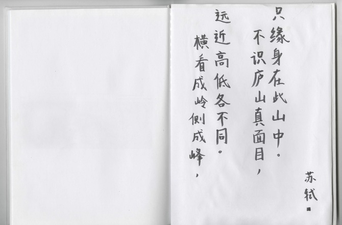
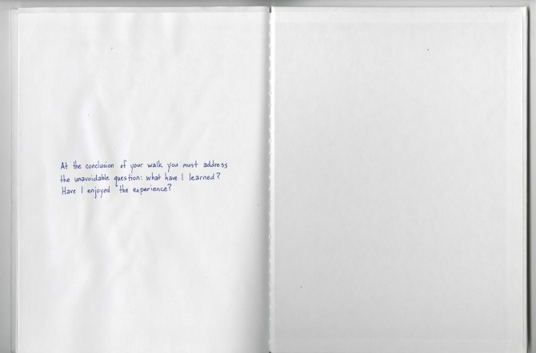
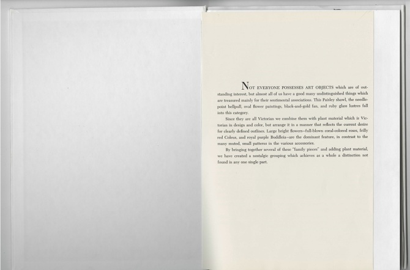
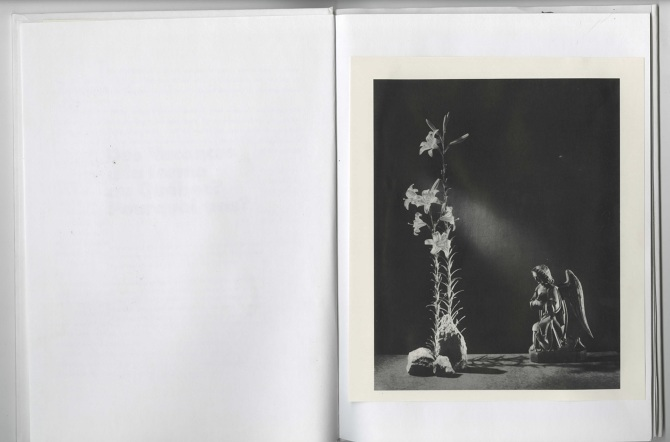
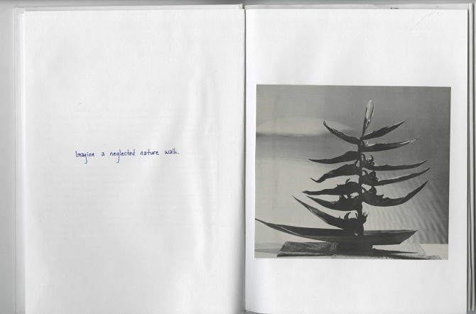
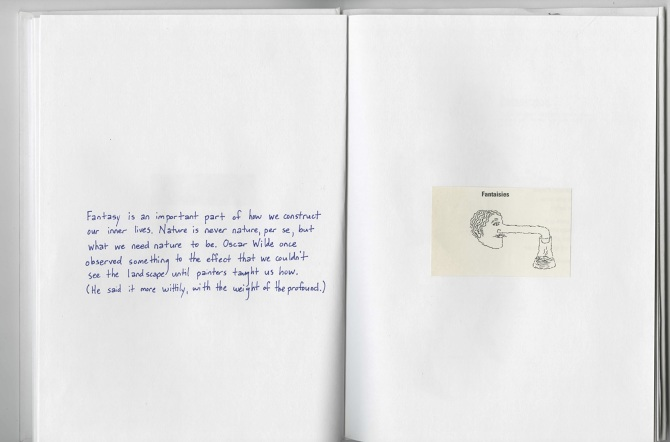
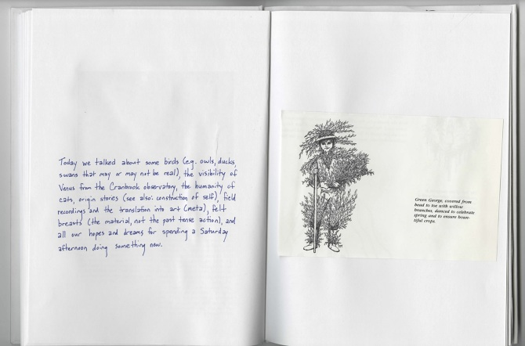
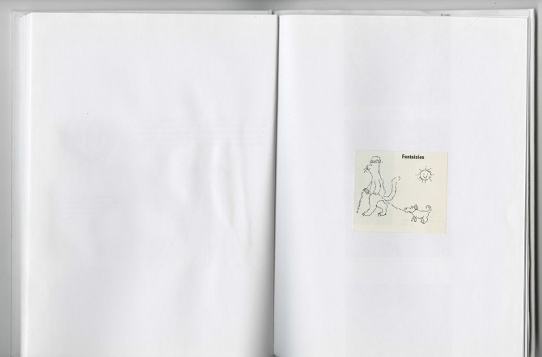
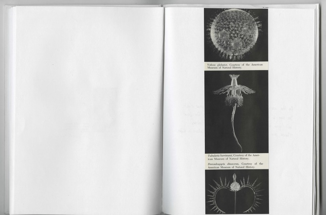
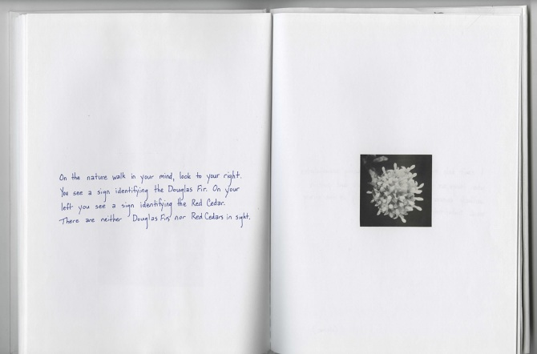
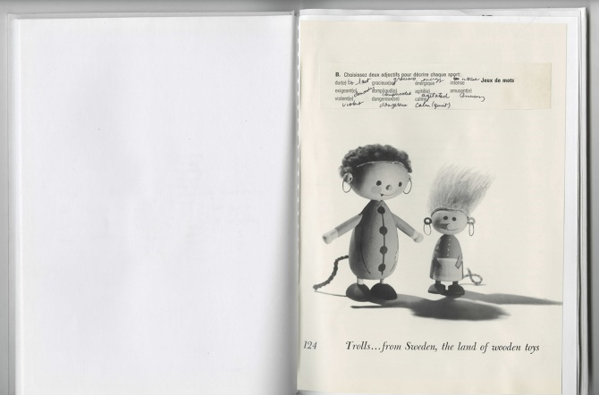
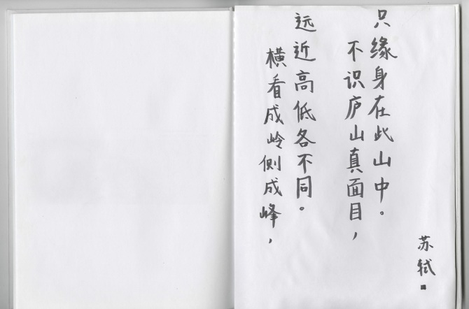
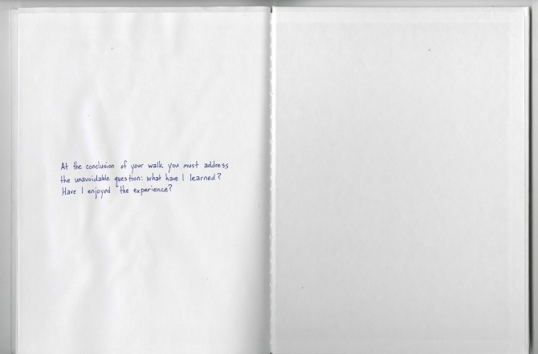